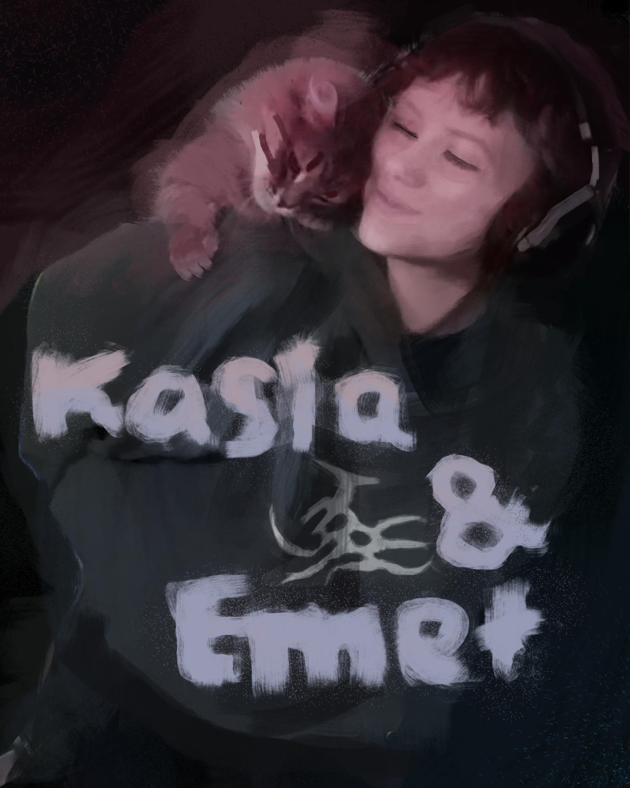

Fanart
Ciekawość wciąż otwiera nowe karty
Kim jestem? Mechatronik z przypadku, który jest jednocześnie fotografem i grafikiem.
Co robię? Klipuję shoty, montuję wideo i projektuję grafiki, a po godzinach prowadzę moto IG.
Kim chcę być? W przyszłości chcę zostać content creatorem i streamerem, a przy okazji robić duże eventy dla widzów i chatu.